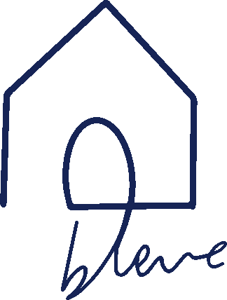

Maison Bleue
À Marseille, beaucoup de familles d'adolescents autistes sont sans solution. L'association Génération Autisme a décidé de créer un accueil dans la journée d'adolescents autistes de 12 à 17 ans pour leur proposer de l'aide ainsi que soulager les parents, les familles et d'autre part pour que nos éducateurs leur apprennent un maximum d'autonomie.
C'est un droit fondamental pour nos adolescents autistes sans solution.
Nous avons besoin d'aide pour financer notre action dans nos dépenses de fonctionnement.
Vous pouvez faire un don pour nous venir en aide.
Les enfants et adolescents autistes sont des personnes comme nous. Les neurotypiques (non-autistes) absorbent l'information de manière « normale », tandis que les autistes, sans filtres, vivent un stress constant qui affecte leur fluidité cognitive. Il est essentiel de les aider à mieux appréhender leur condition.
Il faut renforcer leur confiance et leur montrer qu'ils ont une place dans la société. Un travail individuel, en « un pour un », avec un éducateur, aide à gérer leur comportement et à développer leur autonomie au quotidien.
Sorties en groupe, gestion du stress, imitation, communication, musique ou cuisine sont des activités clés.
Développer l'autonomie
Développer l'autonomie consiste à aider les adolescents autistes à agir seuls en utilisant des supports visuels, des outils ludiques, et un environnement adapté. Progressivement, l’accompagnant devient observateur lorsque l’adolescent réalise l’action correctement. L’encouragement et la motivation sont essentiels pour renforcer leur réussite.
En cas de crise, une analyse des antécédents permet d’identifier les causes et de mettre en place des actions correctives pour ajuster le comportement. L’analyse comportementale appliquée (recommandée par la HAS) favorise des progrès en communication et autonomie.
Le travail est adapté à chaque adolescent, en individuel, en binôme ou en groupe, selon leurs capacités et besoins.
Le Sport, un outil essentiel
Le développement psychomoteur résulte de la maturation neurologique. Chaque étape, comme ramper, courir, parler ou exprimer ses émotions, est le fruit de processus cérébraux complexes. L’imitation, qu’elle passe par des gestes quotidiens ou des interactions sociales, joue un rôle clé dans la socialisation.
Les séances de gymnastique stimulent la motricité et les capacités cognitives par le jeu, améliorant ainsi la qualité de vie des enfants et adolescents. Elles ciblent divers aspects : impulsivité, attention, apprentissage, langage, perception sensorielle et interactions sociales.
L’objectif principal est de favoriser l’épanouissement. Des activités comme le stretching, la danse, le saut ou le ramper renforcent les gestes fondamentaux et aident à apaiser ces enfants souvent tendus, tout en maximisant leurs capacités innées.
L'Organisation
Ce lieu d'accueil fonctionne du lundi au vendredi, de 9h00 à 12h00 et de 13h30 à 16h30, avec une capacité de trois enfants par demi-journée. Chaque enfant bénéficie d’un accompagnement individuel sauf lors des activités sportives. Les enfants peuvent participer à partir d’une demi-journée, avec une sortie mensuelle prévue le samedi.
Les activités visent à développer l’autonomie quotidienne : s’habiller, manger, utiliser les transports, ou partager avec ses pairs. Les sessions incluent des exercices de motricité, des jeux d’imitation, la communication verbale (pour ceux qui parlent) et des activités cognitives comme les mathématiques, la lecture ou la découverte du corps humain.
Des sorties enrichissantes, comme l’accrobranche, l’équithérapie ou les musées, complètent les apprentissages. Les enfants participent également à des activités ludiques, musicales (flûte, guitare, piano), ou sportives, renforçant à la fois leur développement physique et leur épanouissement global.
On parle de nous !
Marseille: un centre d'accueil récemment ouvert dans le 6e arrondissement pour les enfants touchés par des troubles autistes pic.twitter.com/roP8duv2Ky
— BFM Marseille Provence (@BFMMarseille) April 25, 2024
💬 "J'ai compris le désarroi, voire la détresse des parents d'enfants autistes, car il n'existe pas d'accompagnement"
— BFM Marseille Provence (@BFMMarseille) April 25, 2024
La Maison Bleue accueille des adolescents autistes à Marseille avec le soutien financier du groupe automobile Oreca d'Hugues de Chaunac pic.twitter.com/SgD8CREmEQ
Nos partenaires
Nous tenons à remercier chaleureusement Oreca et Chloée & Tiphaine, nos partenaires, pour leur soutien inestimable. Grâce à leur engagement, nous avons pu donner vie à ce projet et atteindre des objectifs qui auraient été inaccessibles sans eux.
Leur confiance et leur générosité jouent un rôle essentiel dans le financement de nos actions et nous
permettent de faire une réelle différence.
Nous sommes fiers de collaborer avec des partenaires qui partagent nos valeurs et notre vision.
Ensemble, nous bâtissons un avenir meilleur.
Merci pour votre soutien et votre précieuse contribution !
Envie de rejoindre nos partenaires ? Contactez-nous